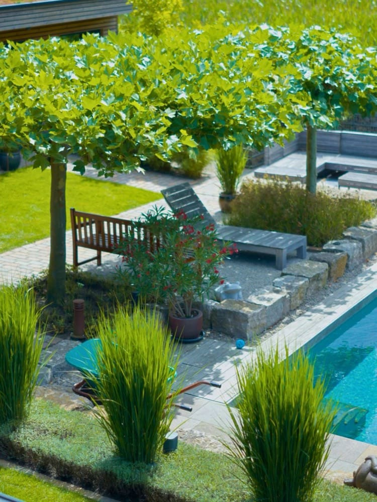

Du
kannst
mehr.
Dein Job sollte das
auch können.
Deine Vorteile
Was dir Schwingel bietet.
- 💶Überdurchschnittliches Gehalt + Sonderzahlungen
- 🌴30 Tage Urlaub + Sonderurlaub
- 🎉Regelmäßige Teamevents & echter Zusammenhalt
- 🤝Wertschätzung ab Tag 1
- 🚀Entwicklung & Aufstiegschancen
- Vollbeschäftigung über das ganze Jahr
- Feste, planbare Arbeitszeiten
- Überschaubare Überstunden
- Respektvoller Umgang & offenes Ohr
- Aufstiegschancen
01
Bauleiter im Garten- und Landschaftsbau (m/w/d)
Du übernimmst die eigenverantwortliche Abwicklung unserer Außenbaustellen – vom privaten Garten bis zum Großprojekt.
Das erwartet dich
- Eigenverantwortliche Abwicklung der Außenbaustellen
- Bau von hochwertigen Privatgärten mit Teich- und Zaunanlagen inklusive Natursteinarbeiten
- Realisierung von Großprojekten im Wohnungs- und Industrieanlagenbau
- Diverse vegetationstechnische Arbeiten
Das bringst du mit
- Meister, Techniker oder Ingenieur im Garten- & Landschaftsbau – oder eine abgeschlossene Ausbildung im GaLaBau
- Handwerkliches Können und Fachwissen
- Teamfähigkeit und gute Kommunikationsfähigkeit
- Ein sicheres Auftreten gegenüber unseren Kunden
02
Vorarbeiter im Garten- und Landschaftsbau (m/w/d)
Du übernimmst Verantwortung im Team auf unseren Baustellen – im Neubau und in der Gartenpflege.
Das erwartet dich
- Leitende Funktion im Baustellenteam
- Bau von hochwertigen Privatgärten mit Teich- und Zaunanlagen inklusive Natursteinarbeiten
- Realisierung von Großprojekten im Wohnungs- und Industrieanlagenbau
- Diverse vegetationstechnische Arbeiten
Das bringst du mit
- Eine abgeschlossene Ausbildung zum Gärtner (m/w/d) – oder mehrjährige Erfahrung im GaLaBau
- Handwerkliches Können und Fachwissen
- Teamfähigkeit und gute Kommunikationsfähigkeit
- Ein sicheres Auftreten gegenüber unseren Kunden
03
Landschaftsgärtner (m/w/d)
Du packst mit an, wenn aus Plänen Gärten werden – mit Ausbildung, mit Erfahrung oder als Quereinsteiger.
Das erwartet dich
- Bau von hochwertigen Privatgärten mit Teich- und Zaunanlagen inklusive Natursteinarbeiten
- Realisierung von Großprojekten im Wohnungs- und Industrieanlagenbau
- Diverse vegetationstechnische Arbeiten
- Einsatz im Garten- & Landschaftsbau (Neubau & Gestaltung) oder in der Grünflächen- & Gartenpflege
Das bringst du mit
- Eine Ausbildung als Landschaftsgärtner (m/w/d), Meister oder Techniker – oder Erfahrung ohne Ausbildung
- Auch Quereinsteiger sind willkommen
- Teamfähigkeit und gute Kommunikationsfähigkeit